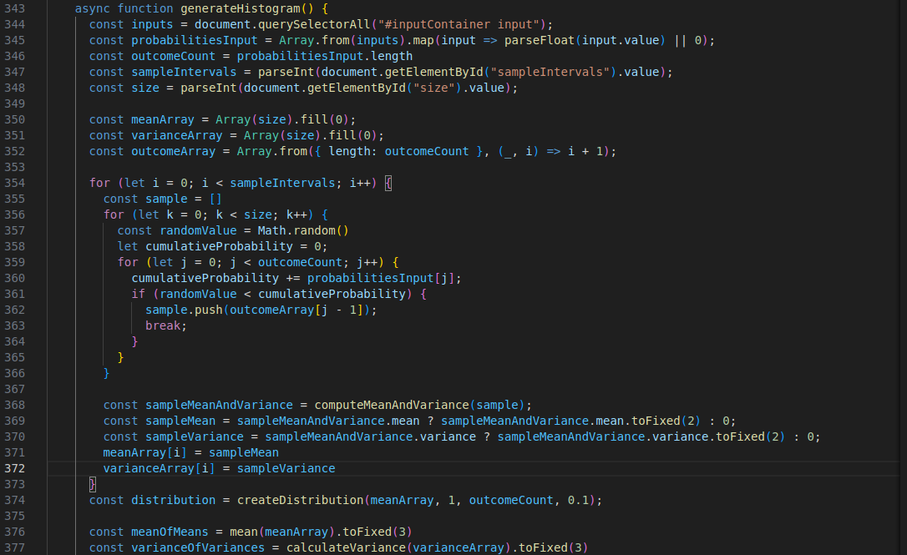

Homework 7
Practical
Distribution of the sampling average
Sum: 0.00
Mean and Variance Analysis
The average of the distribution of the averages of the samples is very close to the theoretical mean because the samples are generated respecting the parent distribution. Even if the sample size n or the number of samples m changes, this relationship remains valid. For the variance, the relationship is similar but the variance of the sample mean distribution is lower than the variance of the parent distribution. This reduction is due to the fact that the variance of the sample mean decreases with increasing sample size n.
Optional Homework
Modular Exponentiation Distribution Results
Analysis of the Results
Case A: n = 19, g = {2, 3, 10, 17}
The distributions for Case A are fairly uniform, with entropy values close to 4 for each of the chosen values of g. This indicates that the values of \(Y = g^U\) mod n are spread out relatively evenly across the possible remainders (0 to 18). A higher entropy value means that the distribution is less predictable and more "random". In cryptographic contexts, a high entropy distribution is desirable because it makes the outcome less predictable and harder to reverse-engineer.
Cryptographic Implications for Case A:
- Higher uniformity and entropy suggest stronger randomness, making this distribution suitable for cryptographic applications.
- Randomness and unpredictability are key to ensuring that outputs (e.g., cryptographic keys or random numbers) are not easily guessed.
- The entropy values closer to 4 show that each outcome is almost equally likely, which is important for security protocols like key generation, hashing, and encryption.
Case B: n = 15, g = {3, 6, 9, 12}
In Case B, the entropy values are lower, indicating less uniformity in the distributions. For example, the distribution of g = 6 is very concentrated, with many values having a frequency of 0. This suggests that the values of Y = g^U mod n repeat more frequently, making the outcome more predictable.
Cryptographic Implications for Case B:
- Lower entropy means higher predictability, which can be a vulnerability in cryptographic systems.
- If a system generates predictable values (e.g., for keys, salts, or nonces), an attacker can potentially reverse-engineer the system and compromise security.
- For example, if the output of a cryptographic function is too predictable, it could be easier for an adversary to guess future outputs or exploit patterns in the distribution.
Reason for choosing the set {2, 3, 10, 17} in Case A:
The set of values {2, 3, 10, 17} was likely chosen because these values are primitive roots modulo 19, meaning they generate a full range of values when raised to powers mod 19. A primitive root has the property that the powers of the root modulo a prime \( n \) will generate all numbers from 1 to \( n-1 \). This is desirable in cryptography, as it ensures that all possible values of \( Y \) are evenly distributed.
Potential Errors in the Exercise:
- If we were not to choose primitive roots in Case A, the distribution might not be uniform, potentially leading to lower entropy and weaker cryptographic properties.
- Additionally, using values of g that do not have a good spread of outputs modulo \( n \) could cause patterns in the distribution, which would be undesirable in a cryptographic context.
Code Explanation
The only major change in the code compared to the previous homework concerns the generation of data. In fact, this time m arrays of size n are created, where each is filled with the value of the various outcomes according to the distribution previously decided by the user. For each of these arrays, the mean is calculated, which is shown as the distribution on the graph in addition to the variance.
